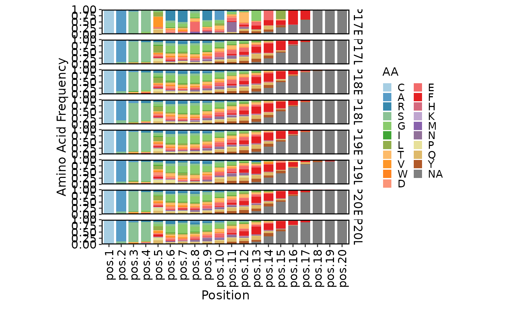
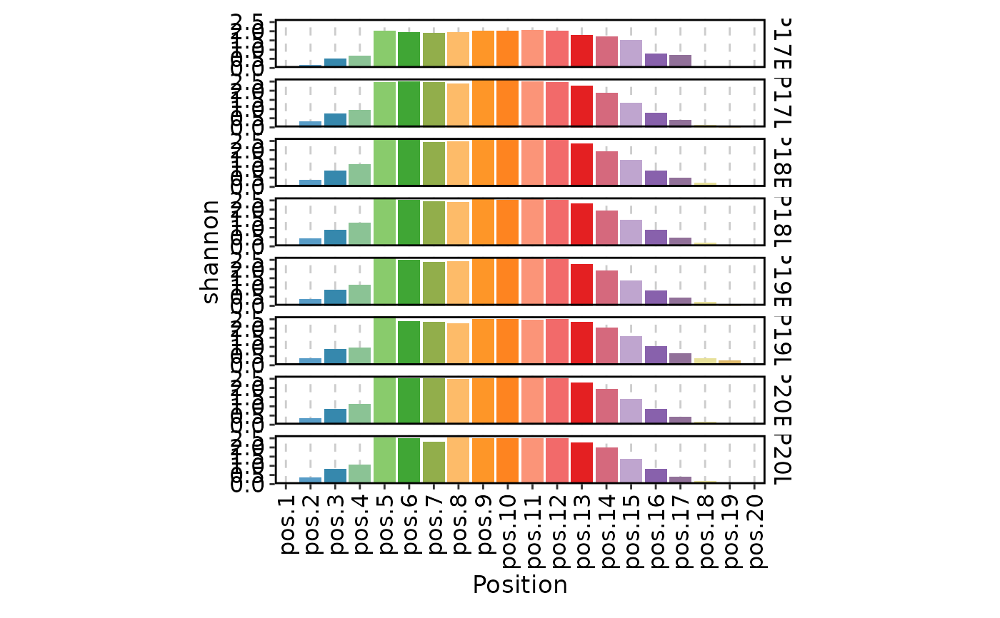
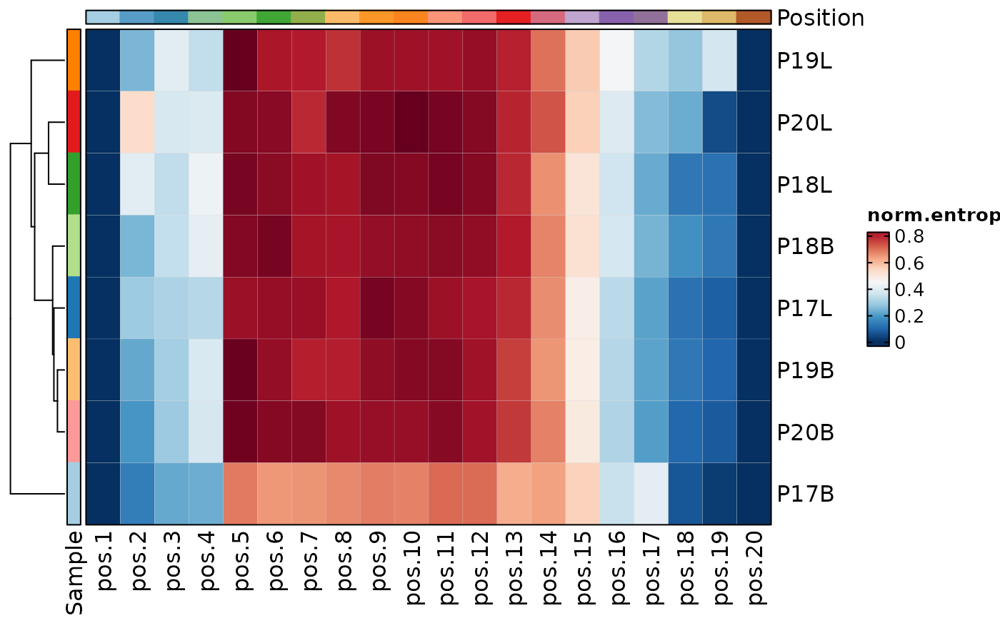
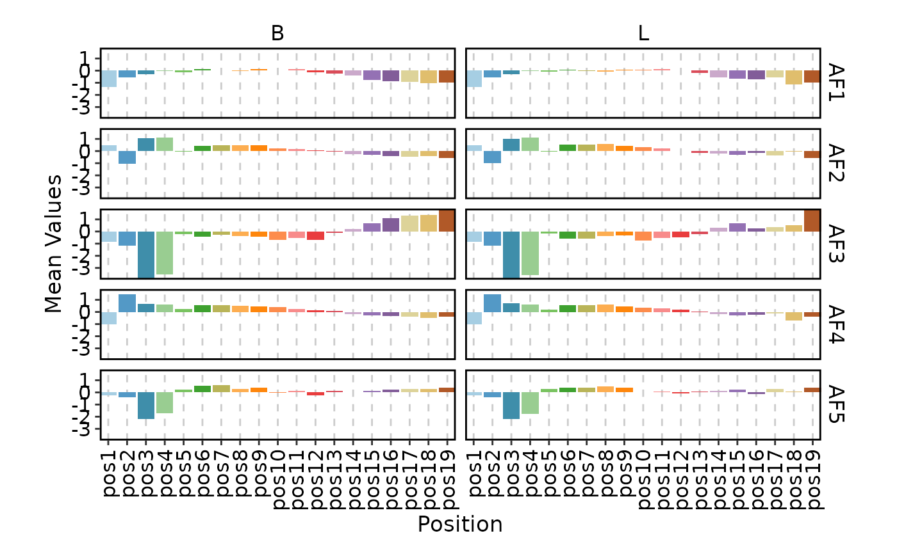
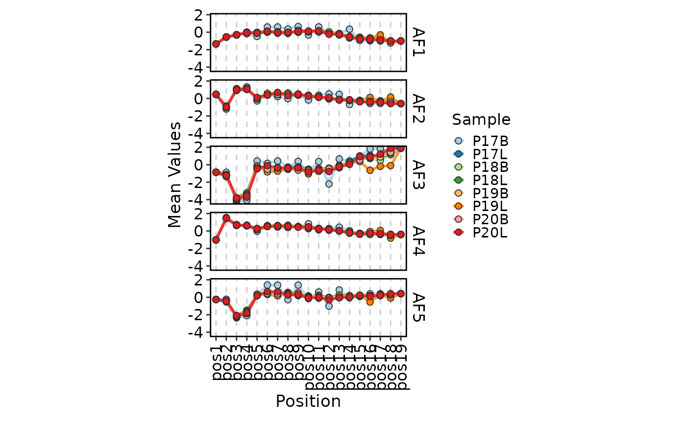

Visualize the positional entropy, property or amino acid frequency of CDR3 sequences.
Usage
ClonalPositionalPlot(
data,
chain = "TRB",
aa_length = 20,
group_by = "Sample",
group_by_sep = "_",
split_by = NULL,
method = c("AA", "shannon", "inv.simpson", "norm.entropy", "Atchley", "Kidera",
"stScales", "tScales", "VHSE"),
plot_type = c("bar", "line", "heatmap", "box", "violin"),
theme_args = list(),
xlab = NULL,
ylab = NULL,
facet_by = NULL,
facet_ncol = NULL,
facet_nrow = NULL,
aspect.ratio = NULL,
...
)Arguments
- data
The product of scRepertoire::combineTCR, scRepertoire::combineTCR, or scRepertoire::combineExpression.
- chain
The chain to be analyzed. Default is "TRB".
- aa_length
The length of the amino acid sequence. Default is 20.
- group_by
The variable to group the data by. Default is "Sample".
- group_by_sep
The separator to use when combining groupings. Default is "_".
- split_by
The variable to split the data by. Default is NULL.
- method
The method to calculate the positional entropy. Default is "AA".
"AA": Amino acid frequency.
"shannon": Shannon entropy.
"inv.simpson": Inverse Simpson index.
"norm.entropy": Normalized entropy.
"Atchley": Atchley factors.
"Kidera": Kidera factors.
"stScales": stScales factors.
"tScales": tScales factors.
"VHSE": Vectors of Hydrophobic, Steric, and Electronic properties. See also scRepertoire::percentAA, scRepertoire::positionalEntropy and scRepertoire::positionalProperty.
- plot_type
The type of plot to generate. Default is "bar".
"bar": Bar plot.
"line": Line plot.
"heatmap": Heatmap.
"box": Box plot.
"violin": Violin plot.
- theme_args
A list of arguments to be passed to the ggplot2::theme function.
- xlab
The x-axis label. Default is NULL.
- ylab
The y-axis label. Default is NULL.
- facet_by
A character vector of column names to facet the plots. Default is NULL.
- facet_ncol
The number of columns in the facet grid. Default is NULL.
- facet_nrow
The number of rows in the facet grid. Default is NULL.
- aspect.ratio
The aspect ratio of the plot. Default is NULL.
- ...
Other arguments passed to the specific plot function.
For "bar", plotthis::BarPlot
For "line", plotthis::LinePlot
For "heatmap", plotthis::Heatmap
For "box", plotthis::BoxPlot
For "violin", plotthis::ViolinPlot
Examples
set.seed(8525)
data(contig_list, package = "scRepertoire")
data <- scRepertoire::combineTCR(contig_list,
samples = c("P17B", "P17L", "P18B", "P18L", "P19B","P19L", "P20B", "P20L"))
data <- scRepertoire::addVariable(data,
variable.name = "Type",
variables = rep(c("B", "L"), 4)
)
ClonalPositionalPlot(data)

ClonalPositionalPlot(data, method = "shannon")

ClonalPositionalPlot(data, method = "norm.entropy", plot_type = "heatmap")

ClonalPositionalPlot(data, method = "Atchley", group_by = "Type", plot_type = "bar")

ClonalPositionalPlot(data, method = "Atchley", plot_type = "line")
